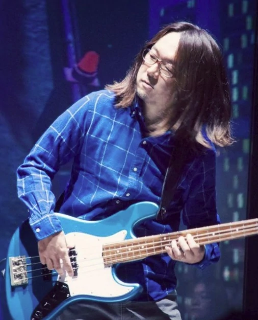

Ég ætla að fjalla um japanska tónskáldið Tomoya Ohtani.
Tomoya Ohtani vinnur hjá tölvuleikjafyrirtækið SEGA og semur tónlist fyrir Sonic the Hedgehog leikinna.
Tomya er mjög fjölhæfur tónlistarmaður. Tónlistin í nútíma Sonic leikjum er oft blanda af hressu rokki og synfóníu,
en raftónlist (electronic music) er líka mjög algeng. Tomoya hefur líka samið djazz og hjálpað til með að semja rapplög.
Hérna eru nokkur vel valin lög úr vel völdum leikjum: